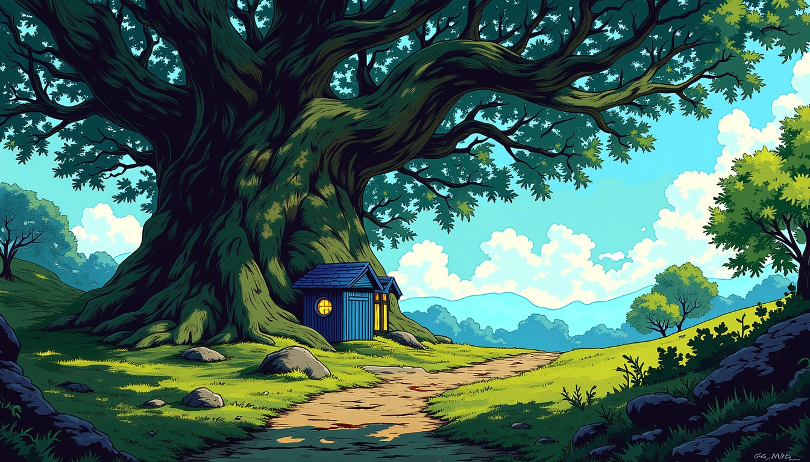
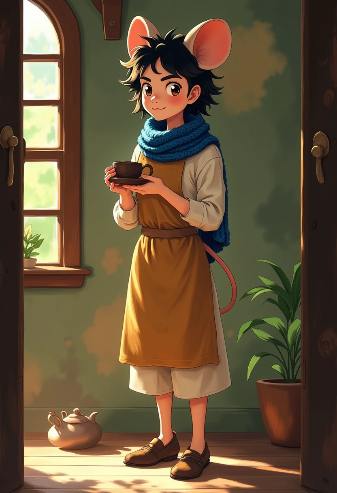

WORLD 01 / STYLE REVIEW
Lonely Forest
A warm home inside an endless dream


Whimsical fantasy storybook illustration, expressive anime faces, painted surfaces, tactile bark and cloth, warm home within an endless dream.
-
Warm paper
#F2E7D2 -
Hearth honey
#E6AD60 -
Worn oak
#71513C -
Moss
#617755 -
Night indigo
#243653 -
Dream violet
#9566D6 -
Star mint
#73D9CB
Background
Wide establishing view, clear landmark, three depth layers, open foreground for characters.
Keep the blue cottage, round window and broad living oak recognizable. Show one clear dream opening.
Avatar
One complete full-body figure occupies about 70 percent of the frame. Leave room around ears, hands, tail and shoes.
Use the approved character reference for face, species, fur, hair, clothes and carried objects. This Rati sample tests the supplied mousefolk proposal.
Materials & light
weathered blue timber, knotted oak, moss, wool, glazed clay.
Warm windows and lamps illuminate real surfaces. Indigo distance holds small violet and mint dream openings.
For review. Mirquo gives the samples bold outlines and cool, bright shade. Review Rati against the adult mousefolk reference. Bring the canopy dream, evening light, and clean image edges into the final art pass.
Reusable prompts and exact model settings
Open the style sheet JSON · Generation receipts
Trigger: MRQ
Shared style
Whimsical fantasy storybook illustration, expressive anime faces, painted surfaces, tactile bark and cloth, warm home within an endless dream.
Background template
MRQ. {style_block} {authored_place_description} {composition} {lighting}
Sample prompt
MRQ, whimsical fantasy storybook environment, painted surfaces, tactile bark and wood. A huge ancient spreading oak shelters a small blue timber cottage with round window, slate roof and warm amber windows. Moss, garden paths and damp stones fill the open foreground. One violet and mint opening in the upper canopy holds a smaller oak and cottage. Blue-hour indigo distance, hearth honey, oak brown, moss green. Wide landscape, clear oak and cottage silhouettes, three layers of depth, environment only, unmarked surfaces, purely pictorial art.
Avatar template
MRQ. {style_block} {approved_identity_description} {authored_action} {composition} {lighting}
Sample prompt
MRQ. Full-length portrait of a mature adult woman cottage host, thirty years old, tall adult figure with natural seven-head proportions, long dark wavy hair, rounded mouse ears, subtle mousefolk face, small tail. Blue knitted scarf, ochre linen dress, cream apron, sturdy brown shoes. She holds a plain ceramic teacup. Capable warm expression, small expressive eyes, softly painted cottage doorway, warm hearth light, indigo shade. Painterly fantasy anime with fine cloth texture. One complete figure with space around shoes and ears. No text, letters, signatures, logos, watermark or border.
Pinned model revision
dac6bb69d1a52b01a48302cb155aa9510866c734bfba94aa4c771c0afb49079f
Native input defaults
{
"model": "dev",
"num_outputs": 1,
"num_inference_steps": 28,
"go_fast": false,
"megapixels": "1",
"output_format": "webp",
"output_quality": 92,
"disable_safety_checker": false,
"guidance_scale": 3,
"lora_scale": 1
}